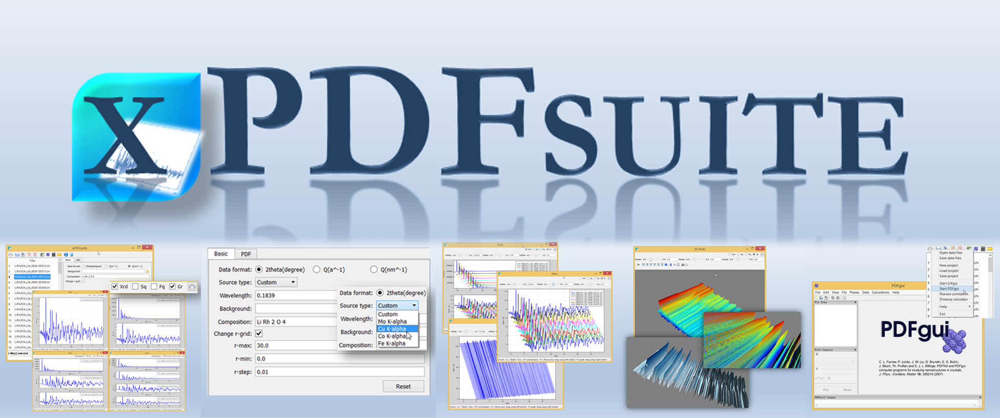

xPDFsuite - an easy to use end-to-end software solution for atomic pair distribution function analysis with x-rays

Overview
This suite of algorithms and software, named xPDFsuite, is an easy to use graphical user interface (GUI) to a number of Diffpy programs.
It provides a raw-data-to-modelled-PDF solution for X-ray PDFs. It is specially convenient for handling high throughput data with many
(hundreds to thousands) of datatsets, such as come from modern synchrotron experiments with 2D detectors. It is equally useful for data
from laboratory x-rays. The software runs on laptops and workstations running windows, mac OSX and linux.
- Within the same GUI you can:
- visualize the 2D raw data from large numbers of files
- integrate 2D data to 1D diffraction patterns
- plot and manipulate plots of large numbers of patterns
- rapidly and easily process the 1D data to obtain S(Q), F(Q) and G(r) (PDF) functions using the power of the PDFgetX3 engine
- use the powerful interactive plotting capabilities to explore these reduced data functions
- use built in tools for comparing datasets using Pearson correlations etc.
- the widely used PDFgui PDF fitting program is also included in xPDFsuite and is straightforwardly incorporated into your workflow
Features
xPDFsuite is exceptionally easy to learn and use and lowers the barrier to using atomic pair distribution function (PDF) methods,
increasing the range of people who can use it, decreasing training costs, and speeding up workflow. xPDFsuite permits users to run
multiple data sets using the same input file, allowing for batch processing of large numbers of datasets in fractions of a second.
- Key features:
- Full featured, easy-to-use GUI
- Real time PDF transformation and plotting
- Flexible plotting and analysis for single and mulitple data sets
- Optimized for high throughput data processing
- 2D powder diffraction image integration
- Static and dynamic mask editing on 2D image
- Pearson correlation analysis on selected data-sets
- Written in Python and on Windows, Linux, and MacOSX
Explore xPDFsuite
- xPDFsuite is available for purchase for either academic or commercial applications.
- To see xPDFsuite in action, please see the video here. (available soon)
- To help you explore xPDFsuite on your own data we have made a free evaluation version of the software available at Columbia Technology Ventures. This has all the xPDFsuite functionality, but you will not be able to save your results.
- To purchase xPDFsuite (separate academic and commercial license options), please go to Columbia Technology Ventures.
Thank you for purchasing xPDFsuite. Funds we raise from sales help us to develop user interfaces and useful features on top of our
free for academics and open source Diffpy products, such as Diffpy-CMI, PDFgetX3 and PDFgui.
We hope you enjoy xPDFsuite and that it supercharges your PDF analyses. Please contact us with feedback and questions by
emailing Prof. Simon Billinge